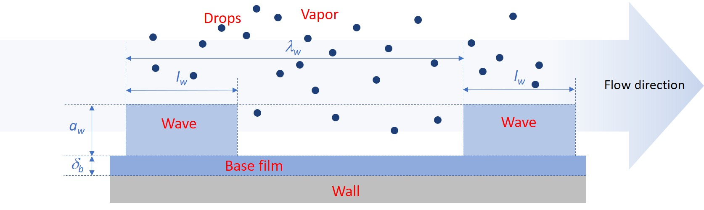

Four-field model
The four-field simulation framework in OpenSTREAM extends the traditional three-field model by explicitly representing disturbance waves, in addition to vapor, droplets, and the base liquid film. This modeling approach was originally developed in Le Corre [2022a] and Le Corre [2022b]. It provides improved resolution of annular two-phase flow dynamics, enabling more accurate and detailed simulations.
The four distinct flow fields: vapor, entrained droplets, base liquid film and disturbance waves, are illustrated in Figure 3.
{kind=link}

Figure 3 Field geometrical characteristics in the four-field simulation framework (vapor, drops, base film and waves).
The four-field model serves several key roles within OpenSTREAM:
Wave-resolved modeling: Separates the liquid film into base film and disturbance waves, capturing their distinct transport behaviors and interactions.
Non-equilibrium dynamics: Includes a Boltzmann-type wave number density transport equation to simulate wave formation, merging, and dissipation.
Enhanced predictive capability: Enables detailed simulation of film dryout, wave-driven mass transport, and hydrodynamic transitions in developing annular flow.
By explicitly modeling disturbance waves and their interactions with other flow fields, the four-field framework offers state-of-the-art capabilities for simulating complex annular flow phenomena, including intermittent film dryout.
An overview of the four-field model implemented in OpenSTREAM is provided below. A more detailed derivation and theoretical background can be found in Le Corre [2022a] and Le Corre et al. [2025a].
Governing equations
The conservation equations are formulated at the wall level, indexed by \(n\), to support multi-wall geometries with different heating rates. These equations are solved starting from the onset of annular two-phase flow. Upstream of this onset, the solution from the mixture solver is used to initialize the flow fields.
1. Mass conservation
Base Film: \(\frac{\partial}{\partial t}(\frac{W_b^n}{u_b^n}) + \frac{\partial W_b^n}{\partial z} = \Pi_{wall}^n (D_b - \Gamma_{wb,b}^n + \Psi_w^n - \Psi_b^n)\)
Disturbance Waves: \(\frac{\partial}{\partial t}(\frac{W_w^n}{u_w^n}) + \frac{\partial W_w^n}{\partial z} = \Pi_{wall}^n (D_w - E^n - \Gamma_{wb,w}^n - \Psi_w^n + \Psi_b^n)\)
where:
\(W_b^n\), \(W_w^n\) are the base film and wave mass flow rates for wall index \(n\)
\(u_b^n\), \(u_w^n\) are the base film and wave velocities for wall index \(n\)
\(D_b\), \(D_w\) are the drop deposition fluxes on the base film and wave fields
\(\Gamma_{wb,b}^n\), \(\Gamma_{wb,w}^n\) are the base film and wave wall boiling mass fluxes for wall index \(n\)
\(\Psi_w^n\), \(\Psi_b^n\) are exchange mass fluxes between film and wave fields for wall index \(n\)
2. Momentum conservation
Base Film: \(\rho_{ls} \delta_b^n (\frac{\partial u_b^n}{\partial t} + u_b^n \frac{\partial u_b^n}{\partial z}) = D_b (u_d - u_b^n) + \Psi_w^n (u_w^n - u_b^n) - \delta_b^n (\frac{\partial p}{\partial z} + g \rho_{ls}) + \beta_b^n \tau_{v,b}^n + (1 - \beta_b^n) \tau_{w,b}^n - \tau_{wall,b}^n\)
Disturbance Waves: \(\rho_{ls} \delta_w^n (\frac{\partial u_w^n}{\partial t} + u_w^n \frac{\partial u_w^n}{\partial z}) = D_w (u_d - u_w^n) + \Psi_b^n (u_b^n - u_w^n) - \delta_w^n (\frac{\partial p}{\partial z} + g \rho_{ls}) + (1 - \beta_b^n) (\tau_{v,w}^n - \tau_{w,b}^n)\)
where
\(\rho_{ls}\) is the saturated liquid density
\(\delta_b^n\), \(\delta_w^n\) are the base film and wave (equivalent) thicknesses for wall index \(n\)
\(u_d\) is the drop velocity
\(\beta_b^n\) is the base film interfacial fraction
\(\tau_{v,b}^n\), \(\tau_{v,w}^n\) are the vapor/base film and vapor/wave interfacial shear stresses for wall index \(n\)
\(\tau_{w,b}^n\) is the base film/wave interfacial shear stress
\(\tau_{wall,b}^n\) is the wall shear stress on the base film for wall index \(n\)
3. Energy conservation
Base Film under thermal equilibrium: \(\Gamma_{wb,b}^n = \frac{{q^{\prime\prime}}_{wall,b}^n}{h_{vs} - h_{ls}}\)
Disturbance Waves under thermal equilibrium: \(\Gamma_{wb,w}^n = \frac{{q^{\prime\prime}}_{wall,w}^n}{h_{vs} - h_{ls}}\)
where:
\(h_{vs}\), \(h_{ls}\) are the saturated vapor and liquid specific enthalpies
\({q^{\prime\prime}}_{wall,b}^n\), \({q^{\prime\prime}}_{wall,w}^n\) are the wall heat flux to the base film and wave fields for wall index \(n\)
4. Wave number density transport
\(\frac{\partial N_w^n}{\partial t} + \frac{\partial}{\partial z}(u_w^n N_w^n) = \frac{N_w^{eq,n} - N_w^n}{t_w^{Relax}}\)
where:
\(N_w^n\) is the wave number density (spatial density of waves)
\(N_w^{eq,n}\) is the equilibrium wave number density
\(t_w^{Relax}\) is the relaxation time associated with wave formation, merging, and dissipation.
Closure models
To complete the conservation equations, several closure models are required:
Same closure models as for the three-field model
Base film/wave mass flow rate split at onset of annular two-phase flow
Drop deposition split between base film and wave fields
Exchange mass fluxes between film and waves: \(\Psi_w^n\), \(\Psi_b^n\)
Wall boiling split between base film and wave fields
Base film interfacial fraction: \(\beta_b^n\)
Vapor/base film and vapor/wave interfacial shear stresses: \(\tau_{v,b}^n\), \(\tau_{v,w}^n\)
Base film/wave interfacial shear stress: \(\tau_{w,b}^n\)
Wall shear stress on the base film: \(\tau_{wall,b}^n\)
Equilibrium wave number density: \(N_w^{eq,n}\)
Relaxation time associated with wave formation, merging, and dissipation: \(t_w^{Relax}\)
The selected closure models are defined in the OpenSTREAM model file, chosen from the available options listed in InputEnums. If not explicitly specified by the user, default models are applied as defined in Inputs.Model. All closure models are implemented in Solvers.FourField.Wave and Solvers.FourField.Base, which the users can modify to suit specific simulation needs.
In addition, the thermodynamic properties for each phase are computed using CoolProp, an open-source thermophysical property library that provides accurate equations of state and transport properties for a wide range of fluids.
Features and assumptions
Supports both steady-state and transient simulations in straight channels
Supports uniform and non-uniform wall heat flux distribution
Models intermittent wave transport and non-equilibrium wave dynamics
Includes wave-film exchange and wave number density evolution
Assumes thermal equilibrium (no temperature difference between phases)
Supports multi-wall geometries (e.g., annuli)
Neglects minor contributions such as frictional heating and temporal pressure gradient contributions
Role in OpenSTREAM
The four-field model provides state-of-the-art simulation capabilities for annular two-phase flow, including in developing flow regions. It captures wave dynamics and their impact on mass and momentum transfer.
Implementation notes
Package
Module
Four-field solver class
Field classes
Key solver methods
Key field properties: